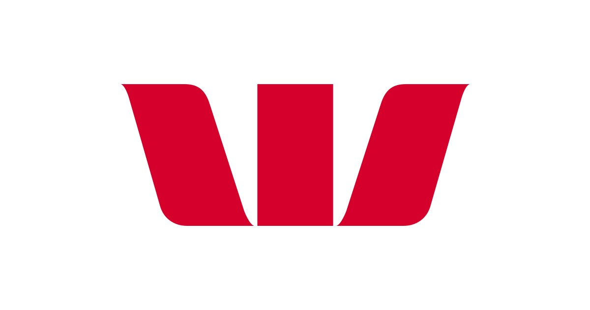

The most customer obsessed
team in the bank.
A working playbook for capturing 1 in 4 Australian small businesses — and becoming Australia's #1 bank.


My vision for this team is that we are the most customer obsessed team in the bank. Because in a fast-paced world, if we're not ruthlessly obsessed with the customer, we will not win.Cass O'Brien · Business Banking Lead, Westpac
Leapfrog the field — from
transactional utility to agentic partner.
What we heard in the room.
It's a bit piecemeal — there's no complete offer, no really well-thought-out offering.
It's hard to be the master of everything. Pick the right partners and execute them end to end — biggest bang for buck.
The biggest gap is getting customers to use it. There's so much going on in the app, the value is almost hidden.
How do we join it into one big cohesive program? We have a lot of things we can do — we just don't put them together in a neat package.
I can say honestly — we are still at level one or two maturity.
I want to learn how to do things at pace. The team has been discussing this for the last four or five months.
Loyalty isn't points.
It's the outcome of a
superior experience.
Points don't make up for a broken experience. In SMB, loyalty is built by removing friction and delivering tangible value before you earn the right to delight.
Meet the need. Remove the pain. Then emotional and social benefits — community, advocacy, identity — drive love.
The future is agentic: B2B becomes A2B becomes A2A. Westpac's agent talks to the customer's agent — in real time, with consistent decisioning.
Choose us. Join us.
Love us.
AI & customers
become the primary
acquisition channel.
When a Surry Hills florist refers a local business, it isn't for the reward — it's because you gave them their Sunday night back.
Eliminate the friction.
Make switching
negligible.
Near-term: high self-serve, shorter call queues, trust preserved. End state: no forms at all.
Be the Fiduciary Guardian.
Not the vault.
Westpac acts in the customer's best interest. Predicts cash flow gaps. Negotiates with suppliers. Automates tax. Celebrates the wins.
The unified data engine behind
the Digital Co-Founder.
From Level 1 to the Level 5 ambition —
one quarter at a time.
When no one's looking, we design processes that are about the customer — not about ourselves. That means we don't do things that serve us. We do things that genuinely help the customer. And we're brave enough to fix what's broken.Cass O'Brien · Business Banking Lead, Westpac
Westpac Secures 25% SMB Market Share by Turning the 'Double You' into a Digital Co-Founder.
Two years ago, Westpac's Business Banking team identified a critical insight: business owners didn't want a flashier app — they wanted their financial admin to disappear. By integrating Salesforce's unified data engine and agentic architecture, Westpac transformed the iconic 'W' into a digital co-founder that predicts needs and automates solutions. Onboarding takes seconds, not days. Routine tasks require Zero UI.
Let's make
the future practical.
Walk through Pepperstone & TD Bank referral stories. See a bespoke view built on Westpac's architecture. Model the ROI on your inputs.